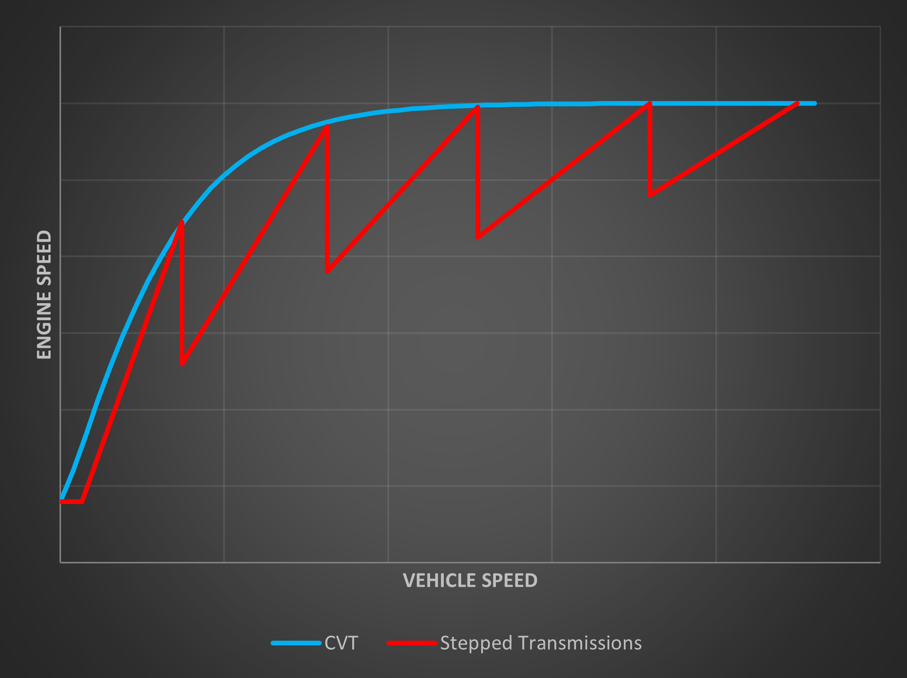

I generally create blogs about the quirky and famous automatic transmissions used in exciting combustion-engined cars. Today, however, we shall explore a very interesting concept which I was first made aware of during one of my Master's course lectures. It is Toyota's e-CVT gearbox, which they have been using in their humble hybrid cars for decades.
What is an e-CVT?
To understand what an e-CVT is, we first need to understand what a CVT is.
CVT stands for Continuously Variable Transmission. Like torque converter automatics, dual clutch transmissions and automated manual gearboxes, CVTs try to eliminate the driver's need to shift gears.
The uniqueness of a CVT lies in its lack of fixed, stepped gears. As the name suggests, it allows an infinitely variable gear ratio between the engine and the wheels, and the aim is to keep the engine in its most efficient range most of the time, independent of the actual vehicle speed.
CVTs do this by transferring the power via a belt that rests on two cones, one representing the engine and the other the wheels. These cones can be visualized as a smoothened-out version of a set of thin gears of consecutively increasing or decreasing size, similar to the set found on geared bicycles. As the two cones move relative to each other, the gear ratio between them changes dynamically, from low gearing i.e. 1st gear, to high gearing. Since there is no fixed number of teeth here, any gear ratio can be achieved just by adjusting their relative positions.
Traditional CVTs are infamous for their "rubber-band" effect. They can be found inside gearless scooters, where one can notice that the actual speed of the scooter and the engine speed are not linearly related. In fact, most scooters do not even have an RPM gauge. The engine always tries to maintain its speed within a band, and the CVT does the job of translating it into the correct torque and speed at the wheels based on the conditions.
Now, for cars, the same concept is used, but it is made stronger by using a metal belt, and larger to suit the application.
However, this "gap" between the vehicle speed that a human perceives and the engine speed, which is not linearly related to it, makes for an unusual experience for many. This is especially so because we are used to a proportional increase in engine noise with vehicle speed, until we shift gears and then repeat the process.

But the e-CVT by Toyota does not use a belt and cones. It instead uses toothed gears and yet achieves a CVT-like effect, rubber-band feel included. It does so by creatively using the functionality of a planetary gearset.
How does it work?
But what is a planetary gearset? It is inspired by the "planetary" movement that we all know. There exists a central sun gear, and around it sit the planet gears, which mesh with the sun gear and can rotate around it. These planet gears are held together by a planet carrier, and the ring gear surrounds the planet gears.
The hybrid powertrain used in the Prius has three sources of rotation. The first is the engine itself, followed by MG1 (Motor-Generator 1) and MG2 (Motor-Generator 2).
These three are connected to the three rotating parts of the planetary gearset, namely the sun gear, the ring gear and the planet carrier, in the following manner:
- MG1 acts as an integrated starter and can also generate (recuperate) energy from the engine, which it either stores in the battery or directs to MG2. It sits between the engine and the planetary gearset, and is connected to the sun gear.
- MG2 is connected to the ring gear, and it is also connected mechanically to the front wheels. This means that the speed of MG2 is directly related to the wheel speed.
- The engine is connected to the planet gears via the planet carrier.
In a normal automatic transmission with planetary gears, one gear receives the input, one gear acts as the output, and the third is kept stationary. This means there exists a FIXED ratio between input and output. This ratio can change depending on which gear is the input, which is the output and which is held stationary, but it is still a constant ratio for a fixed operating scenario.
Toyota added the functionality of not keeping one gear stationary all the time. This means that for the same input gear (the engine) and output gear (the ring gear), a changing speed of the third gear, in this case the sun gear connected to MG1, gives variable ratios. None of the gears in the e-CVT are permanently "stationary", whereas in torque converter automatics each planetary gearset has brakes and clutches to hold one of its gears still to switch between ratios.
Let's look at a few operating scenarios and how they are realized:
Standing still
Consider a scenario where the vehicle is stopped. This means that MG2, and thus the ring gear, MUST be stationary. The engine, connected to the planet carrier, and MG1, connected to the sun gear, can then interchange roles as input and output. MG1 first acts as a starter to start the engine, and once the engine is running, MG1 charges the battery by recuperating energy from the running engine.
Moving off on electric power
Now, imagine a scenario where the engine is stopped and the car needs to move forward. This can be done purely electrically by rotating only MG2, which is connected to the ring gear and thus the wheels, with power supplied from the battery. Since the engine is stationary, the planet carrier does not move, which forces the sun gear, i.e. MG1, to rotate faster than MG2 and in the opposite direction due to their relative gear ratios. This time however, the recuperation or electrical load on MG1 is turned off to reduce parasitic losses and to avoid sapping the actual drive power.
When the engine joins in
After a certain vehicle speed, MG2 spins too fast, which in turn spins MG1 even faster. To reduce this overspeeding of MG1, and to make the engine also contribute to the tractive power, the engine is now started, which turns the planet carrier. This means that there now exists "split-power" delivery from both the engine and MG2 to the wheels. The desired side-effect is that MG1, connected to the sun gear, now starts to slow down, because the planet carrier, which was stationary, is no longer stationary.
On top of that, the engine power itself can be split further by turning up the recuperation in MG1. This makes MG1 act as a brake on the sun gear, and that resistance is what pushes the engine's torque onto the ring gear. The engine power is thus divided, with some of it used to overcome the electromagnetic braking of MG1 and charge the battery, and the rest used to turn the wheels. This way, the engine assists MG2, which is coupled to the wheels, and can therefore power the wheels partially.
The relative speed between the engine (planet carrier) and MG1 (sun gear) can now govern the gear reduction applied at the ring gear. By varying this relative speed, an infinite number of gear ratios can be achieved, thus fulfilling the purpose of a CVT.
Reverse
There is one more functionality that needs to be achieved, which is a reverse gear. If the engine is stopped, MG2, being an electric motor at the end of the day, is simply rotated in the opposite direction. If the engine is running, it keeps turning forwards and drives MG1 as a generator. MG2 then uses that electricity to rotate the ring gear, and thus the wheels, in the opposite direction.
How has it developed over the years?
The first generation of such e-CVTs was introduced by Toyota in their revolutionary Prius in 1998. Over the years, a lot of small improvements have compounded and made the e-CVT a bulletproof piece of hardware.
For example, the first and second generations of the Prius used basically the same hardware, but for the third generation two additional planetary gearsets were added, one each for MG1 and MG2, to favour optimal speed reduction. Another change was that the ring gear, and with it MG2, was connected to the wheels via a gear drive instead of a chain drive.
In the latest models, even MG1 can support MG2 in providing tractive power. To do this without the engine being forced to rotate in reverse, sprag clutches are used. Consider them as one-way valves, which only permit rotation in one direction, and block the other. This eventually allows for a higher EV-only speed and power.
Today, this e-CVT technology has been adopted in a wide range of Toyota and Lexus hybrids, often using the same principle but with a different set of components and gear ratios.
Conclusion
In short, the e-CVT lets MG1 speed up or slow down freely, so a single planetary gearset can offer an endless range of ratios without any belt, clutch or gear shifter.
Although it is a very "boring" transmission, with nothing to hate or love about, I think it is a technological marvel. Toyota somehow managed to combine the best of both worlds, namely the nature of a CVT and the hardware of traditional gears. They created a transmission in which a single planetary gearset harmonizes the engine and two electric machines, backed it with their seal of reliability, and did all of that almost 30 years ago!
It still has the non-linear engine revving behaviour of a CVT, but this technology is aimed at people who do not care much about what the car does to get them from A to B. The fact that it can do that efficiently and reliably is all that matters to them, and for those people, this is a brilliant product. The sales numbers of Prius and other hybrids from the Toyota family are the greatest evidence.
Sources
- Weber Auto YouTube channelyoutube.com/@WeberAuto
- driving 4 answers YouTube channelyoutube.com/@d4a
- KY Speaks: This saga is epic (2011)kyspeaks.com/2011/08/05/this-saga-is-epic
- CarBuzzcarbuzz.com
- ADACadac.de
- AutoScout24autoscout24.de
- Edmundsedmunds.com